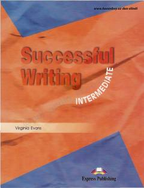

SWIngliz tilida yozish ko'nikmalarini rivojlantirish uchun mo'ljallangan o'quv qo'llanma.
Ushbu kitob ingliz tilini o'rganuvchilar uchun yozish ko'nikmalarini rivojlantirishga mo'ljallangan qo'llanmadir. Unda xatlar, maqolalar, hisobotlar va insholar yozish bo'yicha batafsil ko'rsatmalar hamda namunalar keltirilgan.